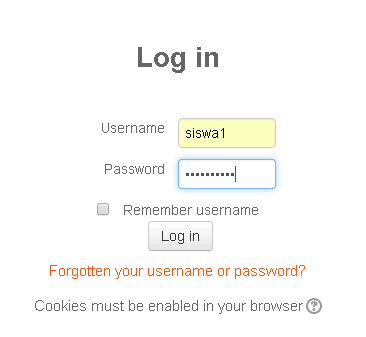
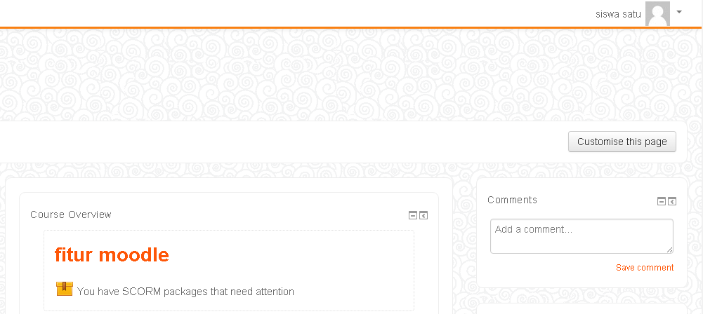
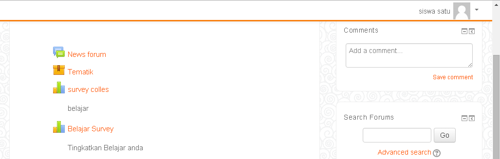
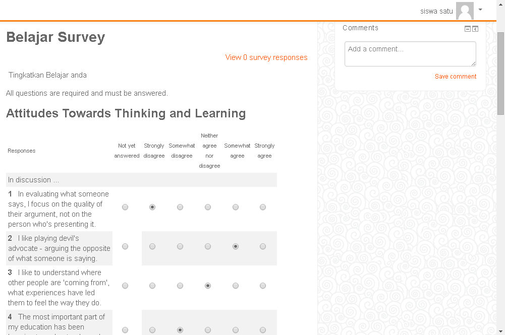
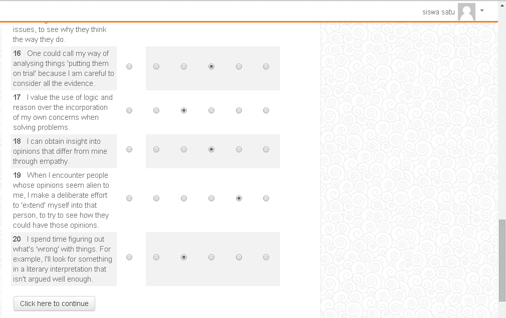
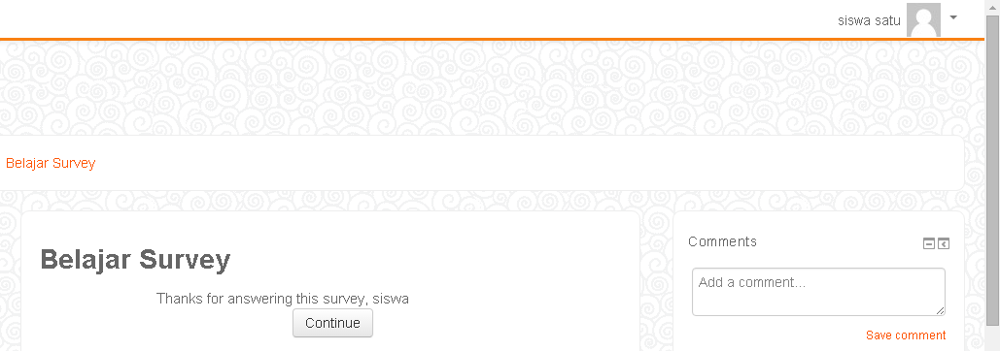

Cara Kerja Siswa
Langkah kerja awal pada siswa adalah, siswa harus log in terlebih dahulu, agar bisa melakukan langkah berikutnya.

Setelah berhasil log in, kemudian pilih "Fitur Moodle" untuk melanjutkan langkah selanjutnya.

Setelah memilih fitur moodle, kemudian pilih "Belajar Moodle" yang telah dibuat oleh admin.

Setelah itu siswa diharuskan memilih jawaban, yang sudah disediakan, pilih salah satu jawaban dengan checklist. 
Ketika semua soal sudah dijawab dengan cara menchecklist salah satu jawaban, kemudian pilih "Click here to continue".

Pilih continue untuk langkah selanjutnya, karena merupakan bagian dari akhir langkah kerja siswa, dan setelah itu siswa bisa log out.
